Antonio Bilotta
My interests are research and teaching in the modeling of structures
About me
- Name: Antonio Bilotta
- Job: Assistant Professor
- Field: Solid Mechanics
- Institution: University of Calabria
- Residence: Italy
After graduating in Civil Engineering, specializing in Structures, in 1999 I obtained my PhD in Computational Mechanics. As a PhD student and in the following years, I worked to study and propose models for the computational analysis of structures that can be used in the engineering calculation of civil and aeronautical constructions. My first experience was participation in a European research project aimed at the creation of thin panels in composite material for the construction of aircraft components, a project to which the main European aeronautical industries have joined. My most recent experience is participation in a research project in Sardinia for the identification of integrated strategies for the protection of the archaeological site of Porto Torres.
During my teaching experience I covered all the roles of university teaching, tutor, exerciser and teacher in charge, for various courses related to the scientific disciplinary sector Construction science. Among these: computational mechanics of structures, theory of structures and dynamics of structures for the master's degree course in civil engineering; Construction science for the three-year degree courses in Chemical Engineering and Technologies for the conservation and restoration of cultural heritage; Mechanics of solids, teaching commitment currently underway, for the three-year degree in Food Engineering.
Still in the educational field, my commitment currently concerns the production of educational material accessible online, accompanied by short audio-lessons and enriched with explanations and applications carried out through MATLAB. The use of teaching methods that stimulate the active use of lessons and cooperative learning in the classroom is another factor that has become relevant in my approach to teaching.
My interests
Research
The study and development of computational models for the analysis of structures and materials are at the center of my research activity. The formulation of the model, the preliminary evaluation with a scientific library (matlab, maple, etc.) and the implementation of prototype codes in C++ form the basis for my scientific production.
Teaching
The teaching of Solid Mechanics, in the introductory subjects for the three-year study courses and in the specialized subjects for the master's courses, allowed me to verify the effectiveness of the teaching methods directly with the students. From them comes the stimulus to experiment with new approaches to teaching modeling structures.
keywords
Finite Element Method
Advanced beam models
Inverse problems
Mixed Finite Elements
Elasto-plastic analysis of structures
C++
Scientific libraries (gsl, matlab, maple, mathematica, gmsh, petsc, slepc)
Teory of structures
Tensor algebra
Continuum mechanics
Tensor calculus
Innovative teaching (flipped, cooperative learning)
Publishing tools (latex, html, pretext)
career
-
Professor assistant (ICAR/08 - Scienza delle costruzioni)
University og Calabria 2005-today -
Research fellow
University of Calabria 2001-2005Computational strategies for nonlinear analysis of structures
, contract n. 113. -
Postdoctoral scholarship holder
University of Calabria 1999-2001
Education and qualifications
-
National scientific qualification as Full Professor
08/B2, ICAR/08 - Scienza delle costruzioni 2020-2029 -
National scientific qualification as Associate Professor
08/B2, ICAR/08 - Scienza delle costruzioni 2017-2023 -
Computational mechanics (PhD)
University of Calabria 1999With a thesis entitled
Formulation of high-performance finite elements through an assumed stress approach
I obtain a PhD, Prof. Raffaele Casciaro as tutor. In the same period I contribute to the foundation and activities carried out by the computational mechanics research group of the University of Calabria. -
Civil Engineering (Master degree)
University of Calabria 1995With a thesis entitled
Computational analysis of elasto-plastic continuos in the geotechnical field
I graduate, 110/110 with honors, under the guidance of Prof. Raffaele Casciaro.
More recent experiences
-
Research project of national interest
Start 2019 End 2022 (Prin 2017, n. 2017J4EAYB)Multiscale innovative materials and structures (MIMS)
-
Research project of regional interest
Start 2015 End 2016 POR FESR, n. J85G09000350002Mathematical models for the simulation of the phenomena of structural degradation in an archaeological area. The case of the archaeological park of Porto Torres.
-
Research project of national interest
Start 2013 End 2016 (Prin 2010-11, n. 2010NRBMTP)Models and algorithms for non-linear analysis of structures and validation of performance-based design rules
More recent Publications
Portfolio
-
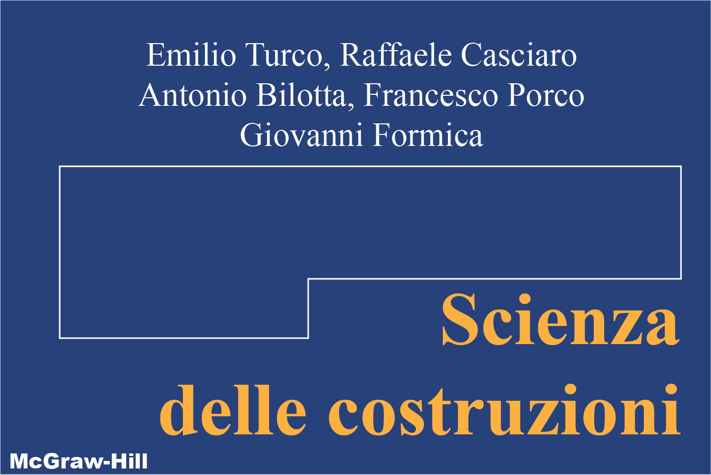
-
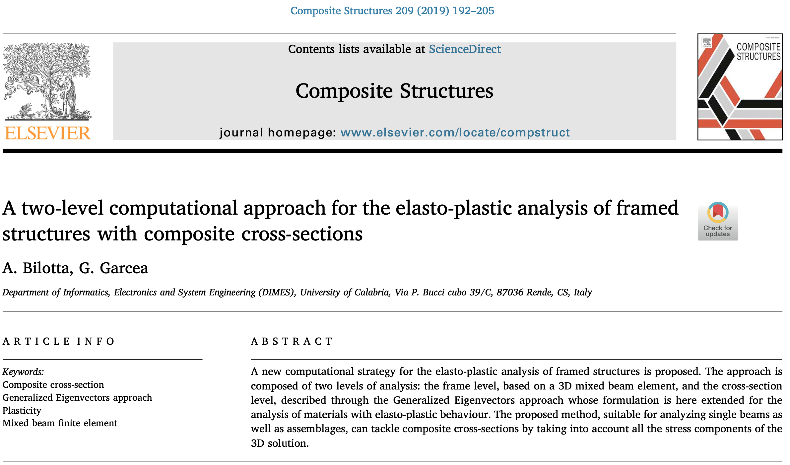
-
-

-
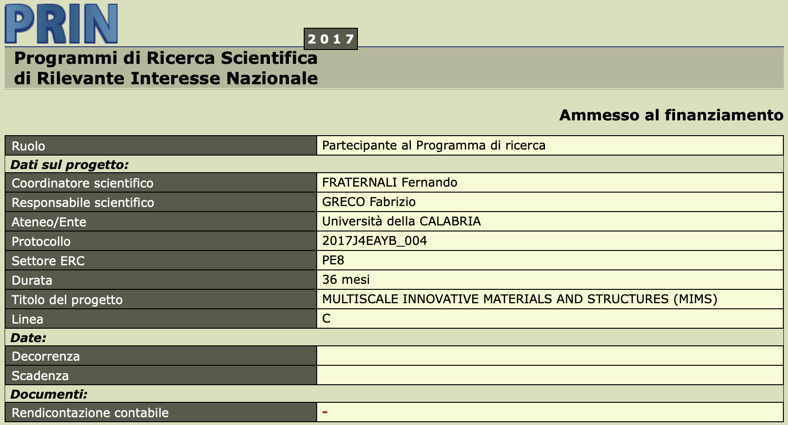
-
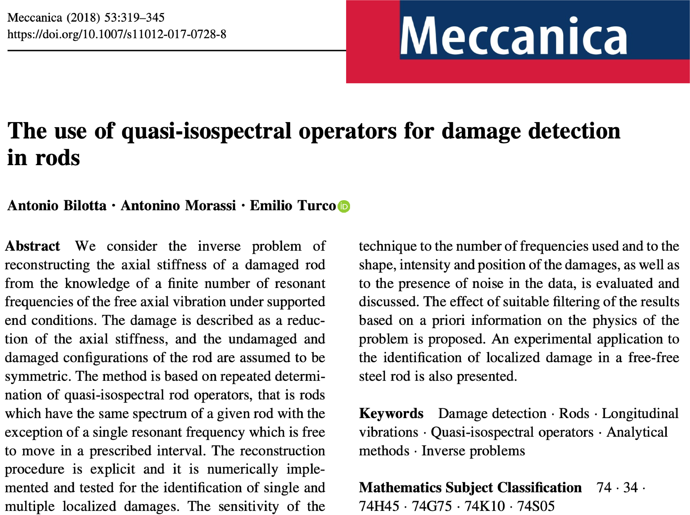
-
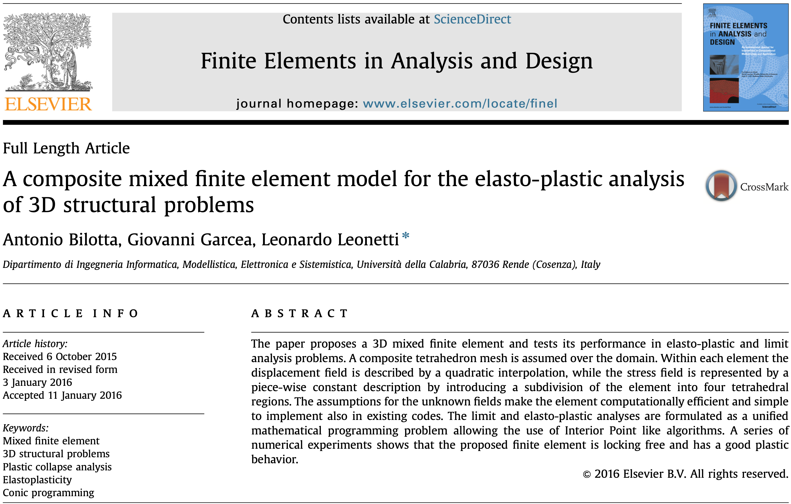
-
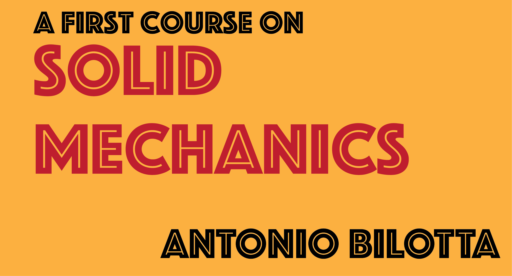Teaching online book

A first course on Solid Mechanics
Editorial project started in November 2019 for the realization of a text accessible online for a semester course on Mechanics of solids.
Keywords: Continuum Mechanics, Statics, preText, MATLAB.
-
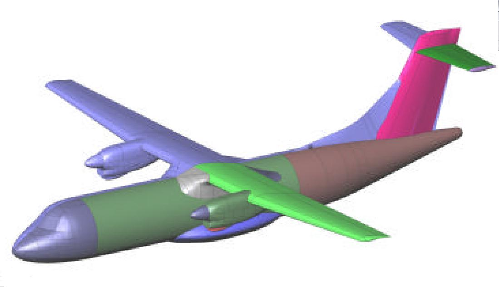
-
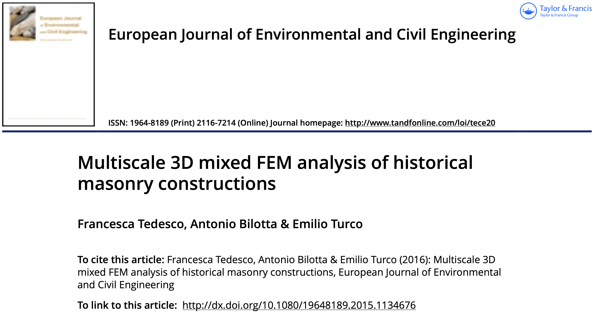
-
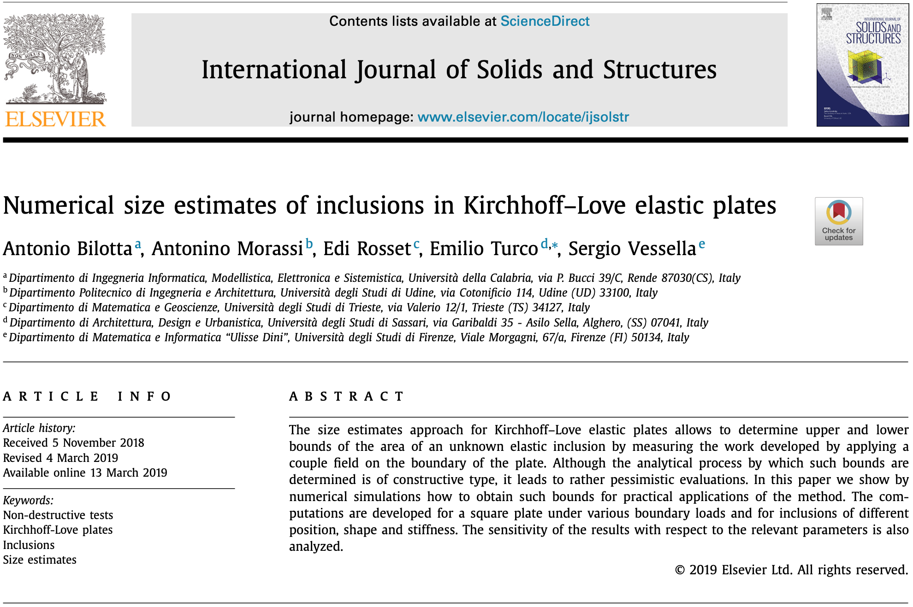
-
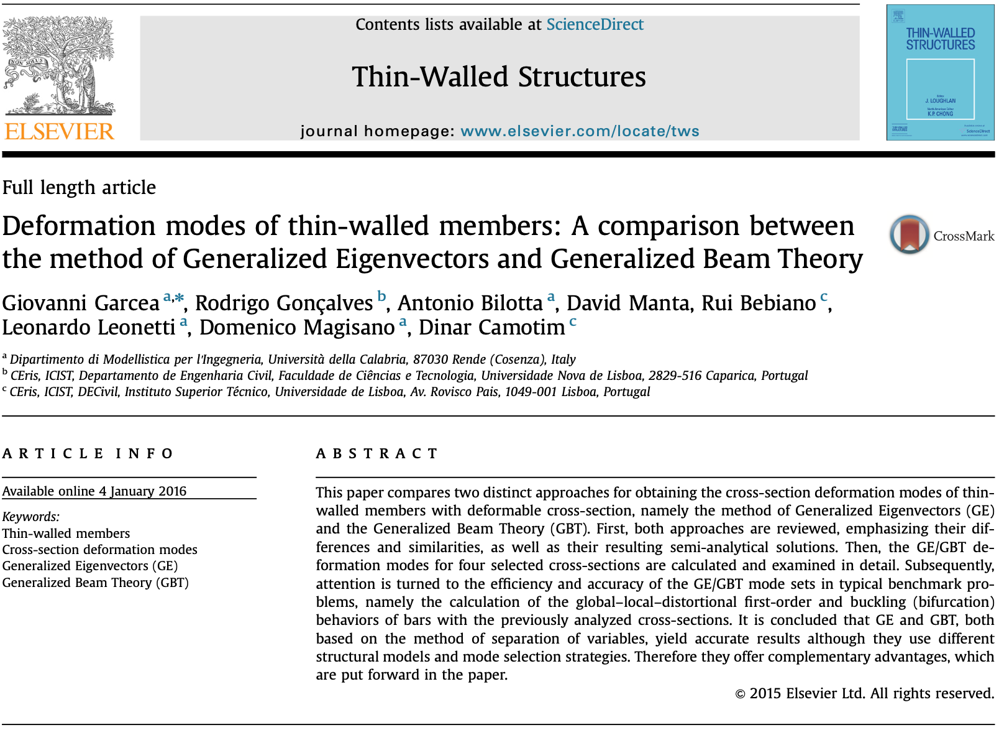
-
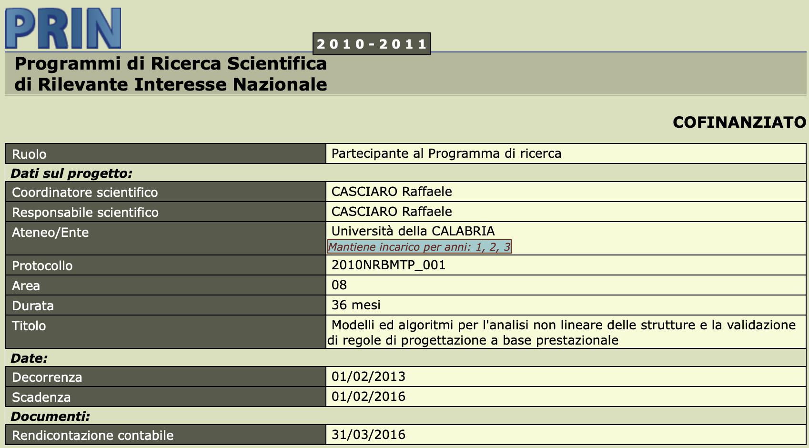
A first course on Solid Mechanics
The text provides an introduction to Solid Mechanics which includes both the basics of Continuum Mechanics and the first rudiments of Statics . Designed to cover in a six-month course topics traditionally quite distant from the point of view of the language used, the topics are presented on the basis of the language that is as uniform as possible and privileging as a support the web interface available online that allows you to vary the methods of exposure from traditional text to short video lessons, animations or references to other web resources.
Another distinctive aspect of this introduction is the use of MATLAB as a symbolic and numerical processing tool. This allows the student to concentrate only on the formulation of the necessary models and operations, thus also learning the use of an automatic calculation tool . Experience in which the computational language assumes the role of reference paradigm for the study of the Mechanics of solids but also of other engineering disciplines.